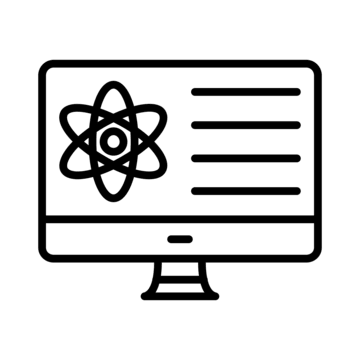
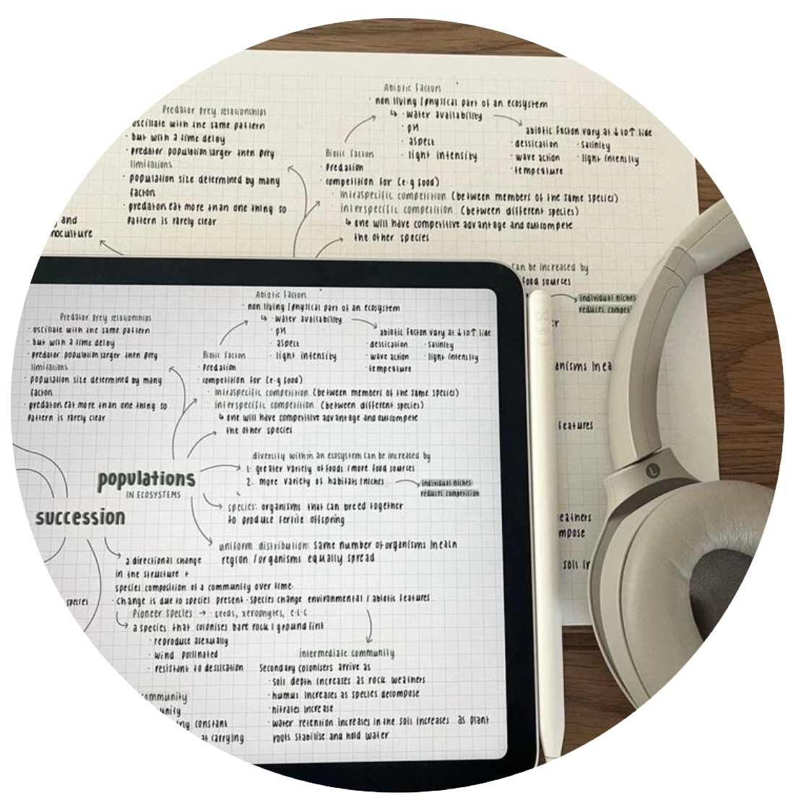
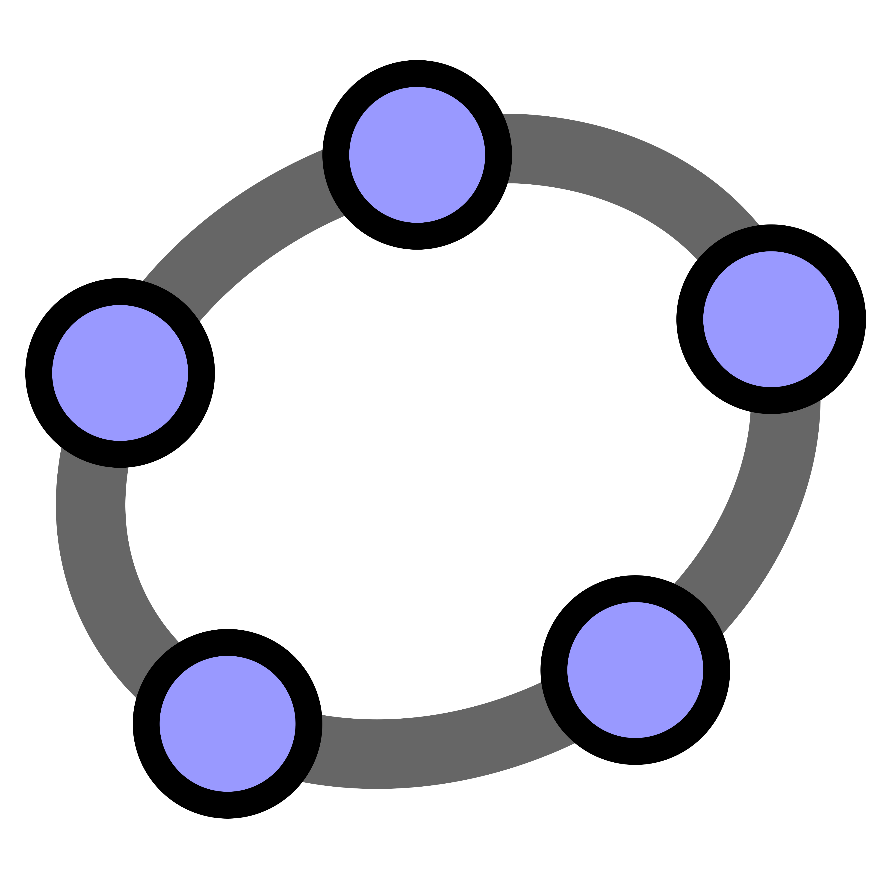

 |
Umenie | Vzdelanie | Šport | Zábava | Domácnosť | Zdravotníctvo |
|
 |
Študenti
Učitelia |
| Edupage | Microsoft teams | Kahoot |  GeoGebra |
Moodle |
Negatíva
|
ZDROJE: https://dl.acm.org/doi/epdf/10.1145/3724363.3729076
https://onlinedegrees.kent.edu/blog/ed-tech-role-of-computer-science
https://www.statpedu.sk/files/sk/o-organizacii/projekty/projekt-dvui/publikacie/digitalne_technologie_menia_poznavaci_proces.pdf
https://amosvision.sk/detail/sk/ako-digitalne-technologie-menia-kazdodenny-zivot-skoly